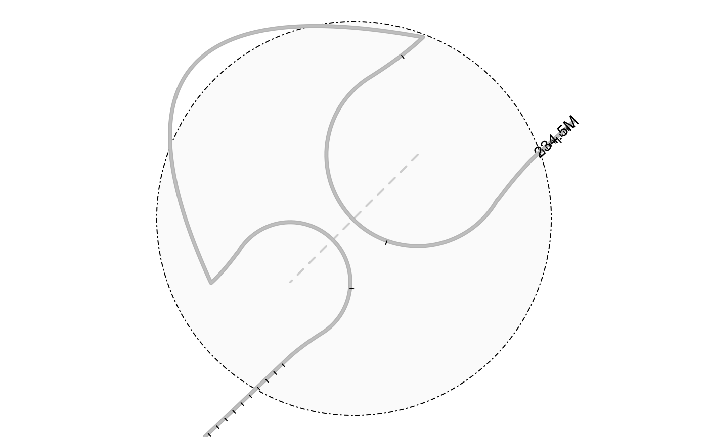

plot graph for GInteractions
loopBouquetPlot(
gi,
range,
feature.gr,
genomicSigs,
signalTransformFun = function(x) {
log2(x + 1)
},
label_region = FALSE,
show_edges = TRUE,
show_cluster = TRUE,
lwd.backbone = 2,
col.backbone = "gray",
lwd.maxGenomicSigs = 8,
reverseGenomicSigs = TRUE,
col.backbone_background = "gray70",
alpha.backbone_background = 0.5,
lwd.gene = 2,
lwd.nodeCircle = 1,
col.nodeCircle = "#DDDDDD25",
lwd.edge = 2,
col.edge = "gray80",
coor_mark_interval = 1e+05,
col.coor = "black",
show_coor = TRUE,
coor_tick_unit = 1000,
label_gene = TRUE,
col.tension_line = "black",
lwd.tension_line = 1,
length.arrow = NULL,
safe_text_force = 3,
method = 1,
doReduce = FALSE,
...
)An object of GInteractions
The region to plot. an object of GRanges
The annotation features to be added. An object of GRanges.
The genomic signals. An object of GRanges with scores or an object of track.
The transformation function for genomic signals.
Label the region node or not.
Plot the interaction edges or not.
Plot the cluster background or not.
Line width for the linker, gene, interaction node circle, the dashed line of interaction edges, the tension line and the maximal reversed genomic signal.
Color for the DNA chain, the compact DNA chain, the node circle, the linker, the tension line and the coordinates marker.
Plot the Genomic signals in reverse values.
Alpha channel for transparency of backbone background.
The coordinates marker interval. Numeric(1). Set to 0 to turn it off. The default value 1e5 means show coordinates every 0.1M bp.
Show coordinates or not.
The bps for every ticks. Default is 1K.
Show gene symbol or not.
Length of the edges of the arrow head (in inches).
The loops to avoid the text overlapping.
Plot method. Could be 1 or 2.
Reduce the GInteractions or not.
Parameter will be passed to layout_with_fr.
A invisible list with the key points of the plot.
library(InteractionSet)
#> Loading required package: SummarizedExperiment
#> Loading required package: MatrixGenerics
#> Loading required package: matrixStats
#>
#> Attaching package: 'MatrixGenerics'
#> The following objects are masked from 'package:matrixStats':
#>
#> colAlls, colAnyNAs, colAnys, colAvgsPerRowSet, colCollapse,
#> colCounts, colCummaxs, colCummins, colCumprods, colCumsums,
#> colDiffs, colIQRDiffs, colIQRs, colLogSumExps, colMadDiffs,
#> colMads, colMaxs, colMeans2, colMedians, colMins, colOrderStats,
#> colProds, colQuantiles, colRanges, colRanks, colSdDiffs, colSds,
#> colSums2, colTabulates, colVarDiffs, colVars, colWeightedMads,
#> colWeightedMeans, colWeightedMedians, colWeightedSds,
#> colWeightedVars, rowAlls, rowAnyNAs, rowAnys, rowAvgsPerColSet,
#> rowCollapse, rowCounts, rowCummaxs, rowCummins, rowCumprods,
#> rowCumsums, rowDiffs, rowIQRDiffs, rowIQRs, rowLogSumExps,
#> rowMadDiffs, rowMads, rowMaxs, rowMeans2, rowMedians, rowMins,
#> rowOrderStats, rowProds, rowQuantiles, rowRanges, rowRanks,
#> rowSdDiffs, rowSds, rowSums2, rowTabulates, rowVarDiffs, rowVars,
#> rowWeightedMads, rowWeightedMeans, rowWeightedMedians,
#> rowWeightedSds, rowWeightedVars
#> Loading required package: Biobase
#> Welcome to Bioconductor
#>
#> Vignettes contain introductory material; view with
#> 'browseVignettes()'. To cite Bioconductor, see
#> 'citation("Biobase")', and for packages 'citation("pkgname")'.
#>
#> Attaching package: 'Biobase'
#> The following object is masked from 'package:MatrixGenerics':
#>
#> rowMedians
#> The following objects are masked from 'package:matrixStats':
#>
#> anyMissing, rowMedians
gi <- readRDS(system.file("extdata", "gi.rds", package = "trackViewer"))
range <- GRanges("chr2", IRanges(234500000, 235000000))
library(TxDb.Hsapiens.UCSC.hg19.knownGene)
#> Loading required package: GenomicFeatures
#> Loading required package: AnnotationDbi
library(org.Hs.eg.db)
#>
feature.gr <- genes(TxDb.Hsapiens.UCSC.hg19.knownGene)
#> 403 genes were dropped because they have exons located on both strands
#> of the same reference sequence or on more than one reference sequence,
#> so cannot be represented by a single genomic range.
#> Use 'single.strand.genes.only=FALSE' to get all the genes in a
#> GRangesList object, or use suppressMessages() to suppress this message.
feature.gr <- subsetByOverlaps(feature.gr, range(regions(gi)))
symbols <- mget(feature.gr$gene_id, org.Hs.egSYMBOL, ifnotfound = NA)
feature.gr$label[lengths(symbols) == 1] <- unlist(symbols[lengths(symbols) == 1])
feature.gr$col <- sample(1:7, length(feature.gr), replace = TRUE)
feature.gr$type <- sample(c("cRE", "gene"),
length(feature.gr),
replace = TRUE,
prob = c(0.1, 0.9)
)
feature.gr$pch <- rep(NA, length(feature.gr))
feature.gr$pch[feature.gr$type == "cRE"] <- 11
loopBouquetPlot(gi, range, feature.gr)
